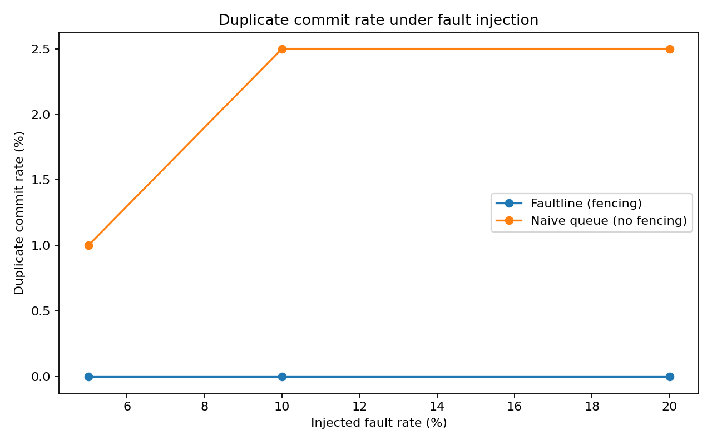

Faultline Benchmark Dashboard
Faultline: 0.0% duplicate commits under 5–20% injected failures.
Naive lease-only baseline: 1.0–2.5% duplicate commits.
Benchmark Chart

Replay Cases
- stale_worker_rejected
- lease_takeover_success
- duplicate_commit_prevented
- worker_crash_retry